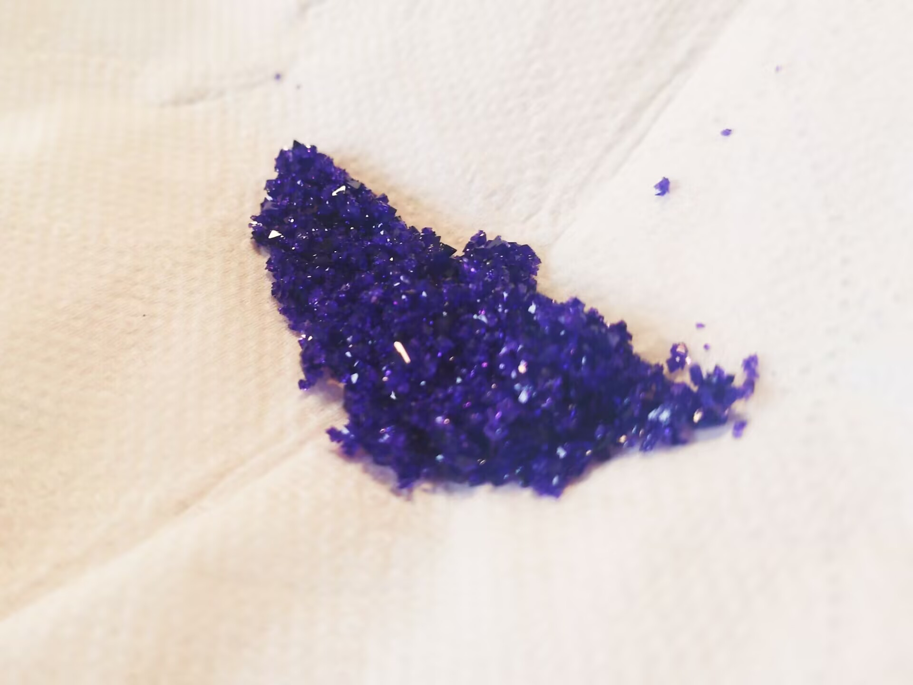

图源：CPSA
四水合双(二亚乙基三胺)合镍(II)六氰合铁(II)酸盐（[Ni(dien)2]2[Fe(CN)6]·4H2O）是一种以深紫色大颗粒结晶为特征的双金属配位化合物。该化合物由 [Ni(dien)2]2+ 阳离子与 [Fe(CN)6]4− 阴离子通过离子键结合形成，兼具镍(II)螯合物的配位化学特色与普鲁士蓝类化合物的六氰合铁结构骨架。
2NiSO4·6H2O + 4dien + K4[Fe(CN)6] ──→ [Ni(dien)2]2[Fe(CN)6]·4H2O↓ + 2K2SO4 + 8H2O
（dien = 二亚乙基三胺，H2NCH2CH2NHCH2CH2NH2）
该配合物可以通过静置慢速结晶获得较大颗粒的紫色晶体。由于产物由两个大体积离子通过静电作用堆积而成，结晶速率过快容易得到细小粉末或团聚体。获得大单晶的关键在于控制溶剂蒸发速率和体系温度稳定性。
可以。氯化镍、硝酸镍等可溶性镍盐均可作为镍源，但需确保阴离子不与体系发生沉淀或副反应。最终仍需使用亚铁氰化钾作为沉淀剂，因此硫酸根、氯离子等常见阴离子通常可接受。
建议配成水溶液。纯二亚乙基三胺碱性较强、放热明显，直接加入可能导致局部过浓和副反应。稀释后缓慢滴加有利于配位反应均匀进行，颜色变化也更易于观察。
不推荐。铁氰化钾中的 Fe(III) 与镍(II) 可能形成不同组成、不同颜色的配合物，产物组成和颜色都会改变。为获得目标 [Ni(dien)2]2[Fe(CN)6]·4H2O，应使用亚铁氰化钾。
延长静置时间或降低温度。该产物溶解度可能受温度影响。若室温静置一天仍无晶体，可将烧杯转移至冰箱上层（约4℃）继续静置，或轻轻用玻璃棒摩擦烧杯内壁诱导成核。
正常现象。该化合物中亚铁氰根离子本身呈淡黄色，镍(II)-dien 配合物呈蓝紫色，二者复合后吸收峰叠加，在厚溶液或大量固体中呈现深紫黑色。过滤干燥后固体通常呈现较深的紫色。
如果您想通过视频更直观地学习四水合双(二亚乙基三胺)合镍(II)六氰合铁(II)酸盐的制备过程，可以参考以下视频：
请将原视频链接填入此处，以获得最佳观看体验。